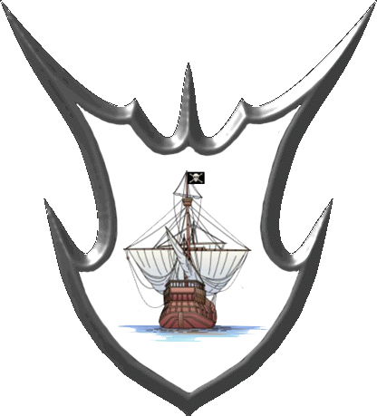
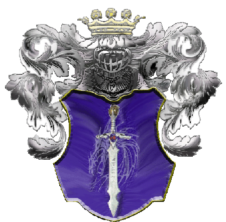

| Übersicht,
Newbies und Fragen |
|
Eure Meinung bitten :-)
|
| Landstreicher Rohan (RIP) |
Nochmal zu den Bildern (GIFS)
Muss ich auch für die Iso ansicht alles machen?
Also ich mein die LEute. Jäger und so |
31.03.05 22:52

|
|
Isabella Cortez
 |
Also falls du mit den Bildern deine Nationskleidung meinst, ich denke das da vielleicht wirklich die Anzahl deiner Nationsmitglieder ein wenig wachsen sollte.
Das führen eines Namens einer längst untergegangenen Nation, ich weiß nicht, ich denke mir würde das nicht zusagen, wäre ich damals als Spieler da drin gewesen. Aber das sollen die Leute mal mit dir klären, ist halt nur meine Meinung dazu :) |
01.04.05 0:48
 |
|
| Patriarch der III. (RIP) |
Freya, der Adler stammt noch von den Römern ... womöglich geht der Ursprung noch weiter zurück (übrigens, in Deutschland ist der Seeadler das Wappentier während es z. B. in den USA der Steinadler ist).
Und das Hakenkreuz ist ursprünglich ein uraltes chinesisches Symbol für Glück, wenn ich mich nicht irre ... also Schwarz auf weißem Grund. Aber da Schwarz auf "sozialistischem" Rot schlecht erkennbar ist war Adolf Hitler wohl die Idee mit dem Kreis gekommen. Auch eine gewollte Ähnlichkeit zur Fahne der damals verbündeten Japaner ist vielleicht nicht ganz auszuschließen.
Im Endeffekt wurde also alles auch nur geklaut. Beim Adler wars halt so offensichtlich daß er nicht als Symbol verboten wurde. Das Hakenkreuz hingegen hat durch den 2. Weltkrieg mit Sicherheit jeden vorherigen Platz und Stellenwert verdrängt, zumindest in der westlichen Welt. |
02.04.05 11:57
|
|
| Patriarch der III. (RIP) |
Achja Persi, ich find deinen Adler nicht störend.
Viele Nationen/Völker verwenden oder verwendeten ihn als Symbol. Daran vermag ich nichts Schlimmes zu erkennen. |
02.04.05 12:01
|
|
| Patriarch der III. (RIP) |
Korrektur: Das Wappentier der USA ist nicht der Steinkopfadler sondern der Weißkopfseeadler (danke Darêyía Eäróldor ;-). |
02.04.05 13:47
|
|
Baldur McMulenberc
 |
Persi:
1.DU warst kein Mitglied in der AM, lediglich der Lehe von Kristoff.
2. Wenn ich mich nicht stark irre hieß das Aurea Mediocritias, du hast also glaub nen "i" vergessen
3. Ich finds bescheuert dass du das nicht rausmachst, die AM sind tot, ihre alten Leute in anderen Nationen, und du, der nie Am´ler warst bringast wieder alte Geschichten zum Leben
4.Es gibt IG "Überlebende" der alten AM...kann mir gut vorstellen dass die da nich nur ooc (wie ich) sondern auch IG was gegen habn.... |
02.04.05 19:06
|
|
| Landstreicher Rohan (RIP) |
1. ich hab nie gesagt das ich drinne war, sondern lehe des nationsführers.
2. Lass ich es drinne weil
1. Die Aussage richtig ist des (Aurea Medioritas) bezüglich meiner Nation,
2. Ich ausserhalb des Spieles gern an die Zeit erinner.
3. Was für alte zeiten? Im Spiel weis ich davon nichts
4. Wenns um namen und texte gehen würde müste ich nem dutznde der spieler hier umgehend eine KE schicken *sowas lächerlich findet*
Mich mal nich alles please.
Hab sogar Wappen gebastelt die hier verwendet werden von anderen Spielern, deshalb mach ich mir auch nich in die Hose ;-)
locker bleiben
|
02.04.05 19:51
|
|
| Mizu Elfendrachen (RIP) |
Patriarch, die Japanische Flagge zu derzeit hatte roten Grund und weiße Sonne mit sich ausbreitenden Strahlen =), er kann ja auch die stilisierten Falken der Ägypter verwenden, haben ähnliche Form, das Hackenkreuz gabs auch bei den Indo-Germanen und stellt das Feuerrad bzw die Sonne dar, im Hinduismus unbd dem daraus hervorgegangenen Buddhismus ist es tatsächlich ein Glückssymbol.
Ach ja der Adler im Wappen Deutschland war schon das Wappentier der deutschen Kaisern ... |
03.04.05 1:22
|
|
| Balëbréthilion Târmundor (RIP) |
Ich halte das "AM" im Wappen besonders deshalb für sehr unpassend, da ja deine Nation rein garnichts damit zu tun hat.
OOC-Erinnerungen sind da eine schlechte Begründung.
Gründe die "AM" von mir aus neu, aber schreib doch nicht den Namen der "AM" auf ein Nationswappen von "Die Gilde"! |
03.04.05 17:02
|
|
| Shadgan Dragaroth (RIP) |
Goldene Mitte
Das war vor dem restart eine Nation.
Ich ware Lehe des Nationsführers.
Verdammt, namen vergessen :-)
Hilft mir mal jemand auf die sprünge?
also entweder du meinst mich da ich ne lange zeit natführer von AM war, Erebor den Nationsgründer oder Kristoff. Ich spiele noch, wie man sieht, Erebor undKristoff aber nicht mehr. Oder meinst du gar Barduk? |
03.04.05 19:05
|
|
| Eleonore von Aquitanien (RIP) |
achja die AM *seufz* das waren noch zeiten *g* |
03.04.05 19:16
|
|
| Shadgan Dragaroth (RIP) |
Ein Großteil der AM spielt leider nimma. |
03.04.05 19:44
|
|
| Eleonore von Aquitanien (RIP) |
spontan fallen mir derzeit nurnoch 6 leute ein |
03.04.05 20:45
|
|
| Shadgan Dragaroth (RIP) |
also nen paar mehr fallen mir doch schon noch ein |
03.04.05 20:51
|
|
Baldur McMulenberc
|
so auf anhieb ca. 10 stück^^ |
03.04.05 21:23
|
|
| Shadgan Dragaroth (RIP) |
ein paar mehr sind es doch |
05.04.05 1:25
|
|
| Tyxaro von Ingham (RIP) |
War das Hakenkreuz nicht das Symbol für Sonne?
ich meine so war das :D |
05.04.05 8:51
|
|
| Samuel Vimes von Ankh (RIP) |
Ja, die Swastika steht in Indien für die Sonne glaub ich und war da nicht auch was bei den Wikingern ????? |
08.04.05 4:09
|
|
Übersicht,
Newbies und Fragen
|